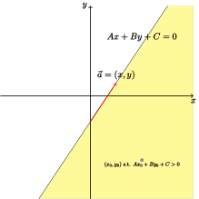
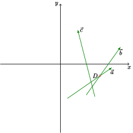
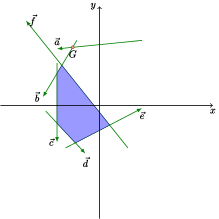
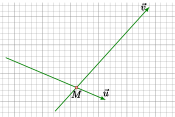
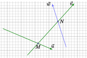
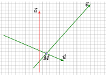

OI Wiki · prijevod · Računska geometrijaOI Wiki · translation · Computational geometry
Presjek poluravninaHalf-plane intersection
Sadržaj
Definicija
Poluravnina
Pravac i jedna njegova strana. Poluravnina je skup točaka, dakle skup točaka koji čine pravac i jedna njegova strana. Ako sadrži sam pravac, zove se zatvorena poluravnina; ako ga ne sadrži, zove se otvorena poluravnina.
Analitički se obično zapisuje kao \(Ax+By+C\ge 0\).
U računalnoj geometriji prikazuje se vektorom; u cijelom se zadatku za poluravninu dosljedno uzima lijeva ili desna strana vektora.

Presjek poluravnina
Presjek poluravnina je presjek više poluravnina. Budući da su poluravnine skupovi točaka, njihov je presjek također skup točaka. U pravokutnom koordinatnom sustavu on omeđuje neko područje.
To jako nalikuje običnom problemu linearnog programiranja: dobiveni presjek poluravnina upravo je dopustivo područje iz linearnog programiranja. U pravilu je presjek poluravnina ograničen, a često se ispituje rješavanje problema poput računanja površine.
Možemo ga shvatiti kao presjek desnih strana svih vektora iz skupa vektora ili kao rješenje sljedećeg sustava nejednadžbi.
Jezgra mnogokuta
Ako spojnica bilo koje točke nekog skupa točaka s bilo kojom točkom mnogokuta nema drugih sjecišta s mnogokutom, taj se skup točaka zove jezgra mnogokuta.
Promatramo li svaku stranicu mnogokuta kao vektor, tako da se vektori nadovezuju jedan na drugi, presjek poluravnina tih vektora usmjerenih prema unutrašnjosti mnogokuta upravo je jezgra mnogokuta.
Rješenje – algoritam S&I
Sortiranje po polarnom kutu
Jezik C ima bibliotečnu funkciju atan2(double y,double x) koja vraća \(\theta\in (-\pi,\pi]\), \(\theta =\arctan \frac{y}{x}\).
Pozovemo tu funkciju izravno s vektorom kao argumentom i sortiramo po povratnoj vrijednosti kao ključu; tako dobivamo novi skup bridova (vektora).
Ako pri sortiranju naiđemo na kolinearne vektore (istog smjera), uzimamo onaj bliži dopustivom području. Na primjer, ako dva vektora imaju jednak polarni kut, a tražimo lijevu poluravninu vektora, dovoljno je zadržati lijevi vektor. Provjerava se tako da se početak ili kraj jednog vektora usporedi s drugim vektorom i utvrdi je li s njegove lijeve ili desne strane.
Održavanje monotonog reda
Budući da je presjek poluravnina konveksan mnogokut, treba održavati konveksnu ljusku. Kako kasnije dodani vektori mogu utjecati samo na prve ili na posljednje dodane bridove (ljuska je tada povezana), dovoljno je brisati elemente s početka i s kraja reda, pa koristimo monotoni red (monotonic queue).
Prolazimo kroz sortirane vektore i održavamo još jedno polje sjecišta. Čim red sadrži više od 2 elementa, među njima nastaju sjecišta.
Ako se za trenutačni vektor prethodno sjecište nalazi na suprotnoj strani od poluravnine koju taj vektor predstavlja, prethodni brid više nema smisla.

Kao na gornjoj slici, pretpostavimo da uzimamo lijevu poluravninu vektora. Nakon sortiranja po polarnom kutu redoslijed obilaska trebao bi biti \(\vec a\to\vec b\to\vec c\). Kad \(\vec a\) i \(\vec b\) uđu u red, u polju sjecišta nastaje točka \(D\) (polje sjecišta na istom indeksu čuva sjecište vektora iz reda s prethodnim vektorom).
Kad zatim dođemo do \(\vec c\), ustanovimo da je \(D\) s desne strane vektora \(\vec c\). A budući da polarni kut vektora koji je proizveo \(D\) mora biti manji od polarnog kuta vektora \(\vec c\), vektor koji je proizveo \(D\) (dakle \(\vec b\)) više ne utječe na presjek poluravnina.
Postoji još jedna moguća situacija: pred kraj novododani vektor može početi utjecati od početka reda.

I dalje pretpostavimo da uzimamo lijevu poluravninu vektora. Nakon dodavanja vektora \(\vec f\) prvo sjecište \(G\) nalazi se s desne strane vektora \(\vec f\); primijenimo li gornji kriterij u obrnutom smjeru, vidimo da tada treba izbaciti vektor \(\vec a\), dakle vektor s početka reda.
Na kraju vektorom s početka reda uklanjamo suvišne vektore s kraja reda. Naime, vektore s početka reda ograničavaju kasniji vektori, a vektore s kraja reda ne. Oni tada zatvaraju prsten, pa vektor s početka reda može ograničiti vektore s kraja reda.
Dobivanje presjeka poluravnina
Ako je presjek poluravnina konveksan \(n\)-terokut, na kraju ćemo u polju sjecišta dobiti \(n\) točaka. Spojimo li ih redom u zatvoreni lanac, dobivamo \(n\)-terokut jedinstvene orijentacije (u smjeru kazaljke na satu ili suprotno).
Tada površinu možemo izračunati triangulacijom. (Računanje površine najosnovniji je način na koji se ovo ispituje.)
Povremeno se dogodi da presjek poluravnina ne postoji ili da mu je površina 0; pripazite na rubne slučajeve.
Napomene
Kad se pojavi vektor koji može izbaciti sve točke iz reda (tj. sve točke u redu nalaze se s njegove desne strane), moramo najprije obraditi kraj reda, a tek zatim početak reda. Zato u petlji najprije obrađujemo dio s --r;, a zatim dio s ++l;; samo tako nema pogreške. Razlog je sljedeći.

U pravilu, kad na kraj reda (redoslijed u redu je \(\left\{\vec{u},\vec{v}\right\}\)) dodamo brid (vektor \(\vec w\)), nastaje sjecište \(N\) koje sužava područje iza \(\vec{v}\).

No svaka je operacija ipak općenita, pa se može dogoditi da točka \(M\) bude „istisnuta”.

Ako se tada pojavi vektor \(\vec a\) takav da je \(M\) s desne strane vektora \(\vec a\), \(M\) mora izaći iz reda. Ako u tom trenutku krenemo od početka reda s ++l, očito proširujemo područje. Zapravo točku \(M\) zajedno određuju \(\vec u\) i \(\vec v\), pa treba razmotriti utječe li na trenutačni tijek \(\vec u\) ili \(\vec v\). A budući da su nakon sortiranja po polarnom kutu vektori poredani u smjeru suprotnom od kazaljke na satu, utjecaj \(\vec v\) je veći.
Kao na gornjoj slici, ako je \(M\) zaista s desne strane vektora \(\vec a\), utjecaj \(\vec v\) sigurno neće ničim pridonijeti rješenju presjeka poluravnina.
Razlog zbog kojeg uklanjamo početak reda jest da je ograničenje trenutačnog vektora jače od ograničenja vektora s početka reda, a preduvjet tog uvjeta jest da red sadrži više od dvije dužine (vektora); inače nastaje gore opisana situacija.
Zato obavezno najprije uklanjamo s kraja reda, a tek onda s početka.
Kod – usporedba
friend bool operator<(seg x, seg y) {
db t1 = atan2((x.b - x.a).y, (x.b - x.a).x);
db t2 = atan2((y.b - y.a).y, (y.b - y.a).x); // računanje polarnog kuta
if (fabs(t1 - t2) > eps) // ako polarni kutovi nisu jednaki
return t1 < t2;
return (y.a - x.a) * (y.b - x.a) >
eps; // provjera s koje je strane vektora y vektor x; najljeviji ide na početak
}
Kod – inkrementalni dio
// pnt its(seg a,seg b) računa sjecište dužina a i b
// s[] su vektori sortirani po polarnom kutu
// q[] je red vektora
// t[i] je sjecište s[i-1] i s[i]
// [Stil koda] raspon reda je (l,r]
// Računa se poluravnina s lijeve strane vektora
int l = 0, r = 0;
for (int i = 1; i <= n; ++i)
if (s[i] != s[i - 1]) {
// Pazite: najprije treba provjeriti kraj reda
while (r - l > 1 && (s[i].b - t[r]) * (s[i].a - t[r]) >
eps) // ako je prethodno sjecište desno od vektora, izbaci s kraja reda
--r;
while (r - l > 1 && (s[i].b - t[l + 2]) * (s[i].a - t[l + 2]) >
eps) // ako je prvo sjecište desno od vektora, izbaci s početka reda
++l;
q[++r] = s[i];
if (r - l > 1) t[r] = its(q[r], q[r - 1]); // računanje novog sjecišta
}
while (r - l > 1 &&
(q[l + 1].b - t[r]) * (q[l + 1].a - t[r]) > eps) // pazite: brisanje suvišnih elemenata
--r;
t[r + 1] = its(q[l + 1], q[r]); // zatim računamo novo sjecište
++r;
// Pazite: ovdje se ++r ne smije izvesti unutar indeksa t…
Zadaci za vježbu
POJ 2451 Uyuw's Concert pripazite na rubne slučajeve
POJ 1279 Art Gallery traži se jezgra mnogokuta
Contents
Definition
Half-plane
A line together with one of its sides. A half-plane is a point set, namely the point set formed by a line and one of its sides. When it contains the line itself, it is called a closed half-plane; when it does not, it is called an open half-plane.
Analytically it is usually written as \(Ax+By+C\ge 0\).
In computational geometry it is represented by a vector; throughout a problem, the half-plane is consistently taken to be the left or the right side of the vector.
Half-plane intersection
The half-plane intersection is the intersection of several half-planes. Since half-planes are point sets, their intersection is again a point set. In the Cartesian coordinate system it encloses a region.
This closely resembles an ordinary linear programming problem: the resulting half-plane intersection is exactly the feasible region of linear programming. In general the half-plane intersection is bounded, and problems such as computing its area are often asked.
It can be understood as the intersection of the right sides of all vectors in a set of vectors, or as the solution of the following system of inequalities.
Kernel of a polygon
If the segment connecting any point of a point set to any point of the polygon has no other intersection with the polygon, that point set is called the kernel of the polygon.
Treat each edge of the polygon as a vector, joined head to tail; then the intersection of the half-planes of these vectors that face the interior of the polygon is exactly the kernel of the polygon.
Solution – the S&I algorithm
Sorting by polar angle
The C language has a library function atan2(double y,double x) that returns \(\theta\in (-\pi,\pi]\), \(\theta =\arctan \frac{y}{x}\).
Call this function directly with the vector as its argument and sort using the return value as the key; this gives a new set of edges (vectors).
If, while sorting, we encounter collinear vectors (with the same direction), we take the one closer to the feasible region. For example, if two vectors have the same polar angle and we want the left half-plane of the vectors, we only need to keep the left vector. To decide, compare the start or end point of one vector with the other vector and check whether it lies on the left or on the right.
Maintaining a monotonic queue
Since the half-plane intersection is a convex polygon, we need to maintain a convex hull. Because a vector added later can only affect the edges added first or the edges added last (the hull is connected at that point), we only need to delete elements from the front and the back of the queue, so a monotonic queue is used.
We iterate over the sorted vectors and maintain a separate array of intersection points. As soon as the queue contains more than 2 elements, intersection points appear between them.
For the current vector, if the previous intersection point lies on the opposite side of the half-plane represented by this vector, the previous edge becomes meaningless.
As in the figure above, suppose we take the left half-plane of the vectors. After sorting by polar angle, the traversal order should be \(\vec a\to\vec b\to\vec c\). When \(\vec a\) and \(\vec b\) enter the queue, a point \(D\) appears in the intersection array (the intersection array stores, at the same index, the intersection of the vector in the queue with the previous vector).
Next, when we reach \(\vec c\), we find that \(D\) is on the right side of \(\vec c\). And because the polar angle of the vector that produced \(D\) must be smaller than that of \(\vec c\), the vector that produced \(D\) (namely \(\vec b\)) no longer affects the half-plane intersection.
There is another possible situation: near the end, a newly added vector may start affecting the queue from the front.
Again suppose we take the left half-plane of the vectors. After adding the vector \(\vec f\), the first intersection point \(G\) lies on the right side of \(\vec f\); reading the criterion above in reverse, we see that the vector \(\vec a\), i.e. the vector at the front of the queue, should be removed.
Finally, use the vector at the front of the queue to eliminate redundant vectors at the back. This is because the vectors at the front are constrained by later ones, while the vectors at the back are not. At this point they form a closed loop, so the vector at the front can constrain the vectors at the back.
Obtaining the half-plane intersection
If the half-plane intersection is a convex \(n\)-gon, we end up with \(n\) points in the intersection array. Connecting them head to tail gives an \(n\)-gon with a consistent orientation (clockwise or counterclockwise).
Its area can then be computed by triangulation. (Computing the area is the most basic way this is tested.)
Occasionally the half-plane intersection does not exist or has area 0; pay attention to the boundary cases.
Remarks
When a vector appears that can pop all points out of the queue (i.e. all points in the queue are on its right side), we must process the back of the queue first and only then the front. Therefore, in the loop we first run the --r; part and then the ++l; part; only then is it correct. The reason is as follows.
Normally, when we add an edge (vector \(\vec w\)) after the queue (whose order is \(\left\{\vec{u},\vec{v}\right\}\)), an intersection point \(N\) appears that shrinks the region behind \(\vec{v}\).
However, every operation is generic, so it may happen that the point \(M\) gets "squeezed out".
If a vector \(\vec a\) now appears such that \(M\) lies on the right side of \(\vec a\), \(M\) has to leave the queue. If at this moment we start from the front of the queue with ++l, we obviously enlarge the region. In fact, \(M\) is determined jointly by \(\vec u\) and \(\vec v\), so we have to consider whether it is \(\vec u\) or \(\vec v\) that affects the current process. And because after sorting by polar angle the vectors are in counterclockwise order, the influence of \(\vec v\) is greater.
As in the figure above, if \(M\) is confirmed to be on the right side of \(\vec a\), then the influence of \(\vec v\) certainly contributes nothing to the answer of the half-plane intersection.
The reason we eliminate the front of the queue is that the constraint of the current vector is stronger than that of the vector at the front, and the precondition of this criterion is that the queue contains more than two segments (vectors); otherwise the situation above arises.
Therefore we must always eliminate from the back of the queue first and only then from the front.
Code – comparison part
friend bool operator<(seg x, seg y) {
db t1 = atan2((x.b - x.a).y, (x.b - x.a).x);
db t2 = atan2((y.b - y.a).y, (y.b - y.a).x); // compute the polar angle
if (fabs(t1 - t2) > eps) // if the polar angles differ
return t1 < t2;
return (y.a - x.a) * (y.b - x.a) >
eps; // determine which side of y vector x is on; the leftmost one comes first
}
Code – incremental part
// pnt its(seg a,seg b) computes the intersection of segments a and b
// s[] are the vectors sorted by polar angle
// q[] is the queue of vectors
// t[i] is the intersection of s[i-1] and s[i]
// [Code style] the range of the queue is (l,r]
// We compute the half-plane on the left side of the vectors
int l = 0, r = 0;
for (int i = 1; i <= n; ++i)
if (s[i] != s[i - 1]) {
// Note: the back of the queue must be checked first
while (r - l > 1 && (s[i].b - t[r]) * (s[i].a - t[r]) >
eps) // if the previous intersection is on the right of the vector, pop the back
--r;
while (r - l > 1 && (s[i].b - t[l + 2]) * (s[i].a - t[l + 2]) >
eps) // if the first intersection is on the right of the vector, pop the front
++l;
q[++r] = s[i];
if (r - l > 1) t[r] = its(q[r], q[r - 1]); // compute the new intersection
}
while (r - l > 1 &&
(q[l + 1].b - t[r]) * (q[l + 1].a - t[r]) > eps) // note: remove redundant elements
--r;
t[r + 1] = its(q[l + 1], q[r]); // then compute the new intersection
++r;
// Note that ++r must not be done inside the index of t here…
Exercises
POJ 2451 Uyuw's Concert pay attention to the boundary cases
POJ 1279 Art Gallery find the kernel of a polygon